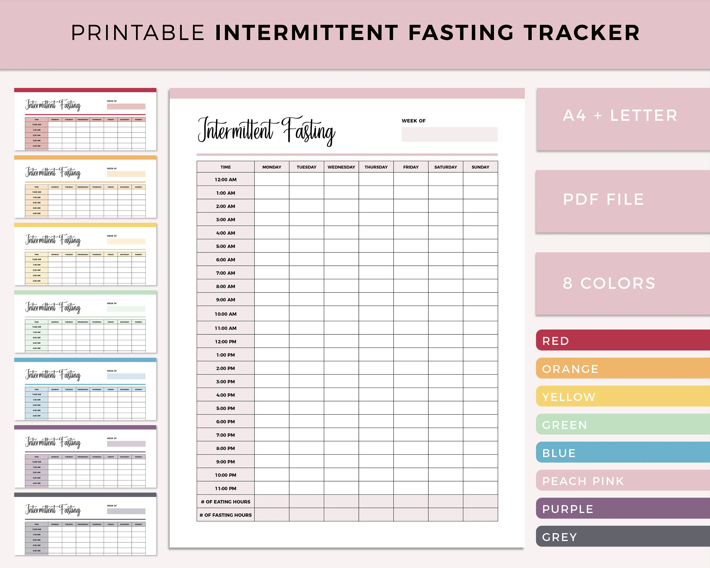

Related Articles
Deep dives into the science and practice behind these tools.

Fasting Experiments
Why I Stopped Eating at 6 PM During Austin's 110°F Summer (And What It Did to My Sleep)
I moved my eating eating-window-planner to survive the heat. My body had opinions. So did my sleep fasting-session-tracker.

Fasting Experiments
I Joined a Sound Bath Session at BATHE on an Empty Stomach. Here's What Happened.
Crystal bowls, an empty stomach, and a nervous system that got rebooted. I cried. I didn't know why.
Fasting Experiments
The Sober Curiosity Movement in Austin Is Making Fasting Easier (And Weirder)
Mocktails, kombucha, and a secret club of people who don't drink. Turns out sobriety and fasting are the same thing.

Fasting Experiments
I Tracked My Gut Microbiome for 30 Days While Fasting. The Results Were Gross.
Poop in a tube. Mail it off. Get a bar chart of bacteria. My gut diversity went from 62 to 74 in 30 days.

Fasting Experiments
What SXSW Did to My Fasting Schedule (And How I Recovered in 7 Days)
Free beer at 2 PM. Pizza at midnight. Three pounds gained. Here's my 7-day recovery plan that actually worked.

Fasting Experiments
What 365 Days of Fasting Data Looks Like (My Year in Review) | Sarah's Fasting Journal
One year. 365 days. I have data for 312 of them. Here's what it looks like when you visualize it.